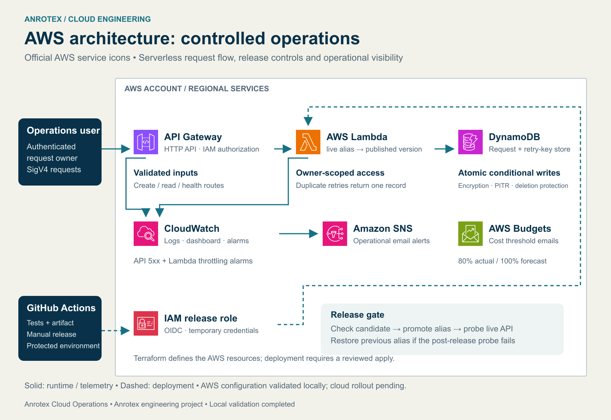
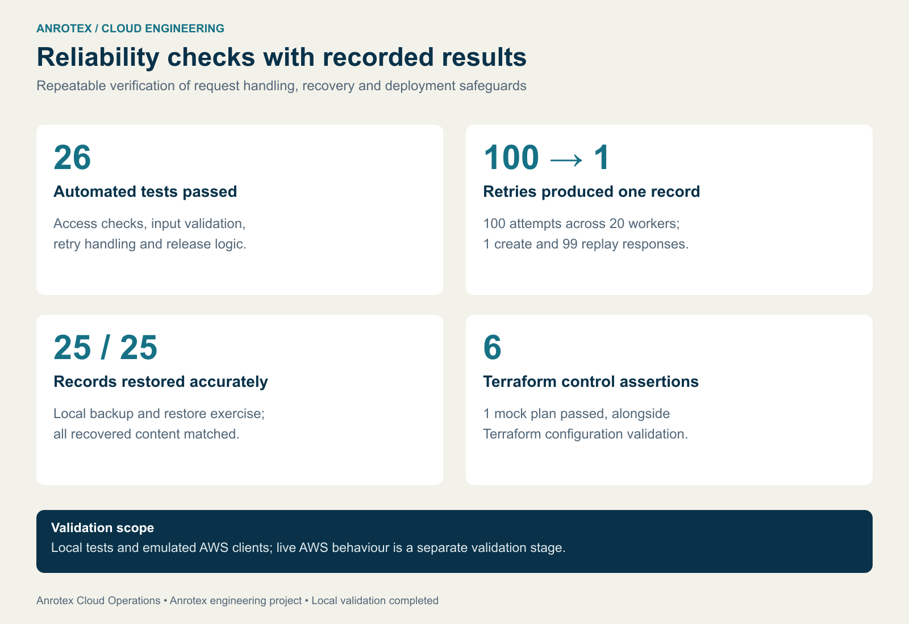
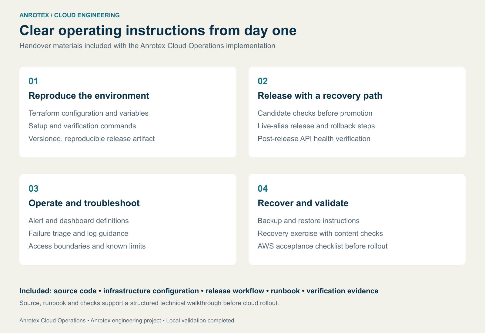

Reliable AWS operations.
Safe releases. Clear recovery.
Anrotex Cloud Operations brings authenticated requests, repeatable infrastructure and recovery checks into one documented implementation.

The challenge
Small engineering teams need to process operational requests reliably, prevent duplicate actions during retries, and release changes without losing a clear recovery path. Anrotex built Cloud Operations to address these requirements in one maintainable AWS architecture.
What we built
An authenticated Python API validates requests and enforces access by request owner. Idempotency keys and atomic DynamoDB writes prevent duplicate records when the same operation is retried. Terraform defines API Gateway, Lambda, DynamoDB, scoped IAM permissions, CloudWatch monitoring, operational alerts and budget notifications.
A GitHub Actions workflow tests and packages the application. The release tooling checks a candidate version before moving the live alias, probes the API after promotion, and restores the previous version if that probe fails. OIDC provides temporary deployment credentials.
Measured checks
• 26 automated tests passed.
• 100 concurrent retry attempts produced one stored record: one create and 99 replay responses.
• A recovery exercise restored all 25 records with matching content.
• Terraform validation and six assertions in a mock plan passed.
Ready for operational ownership
The delivery includes source code, infrastructure configuration, release and rollback instructions, a troubleshooting runbook, backup and recovery steps, and a cloud acceptance checklist. These materials make setup and technical walkthroughs repeatable.
Anrotex engineering project, built and validated locally using emulated AWS services. Live AWS deployment is the next validation stage.
Need a clear starting point for your own AWS environment? Our US$500 AWS Infrastructure Review covers one agreed workload and delivers a prioritized action plan in five business days after access and scope are confirmed.

